¿Qué es Google Antigravity, Cómo Usar su Interfaz Real y Cómo Conectarlo con AWS vía MCP?
Esta guía está diseñada paso a paso y con capturas reales de la aplicación Google Antigravity para que entiendas desde cero qué es, qué hace cada botón de la pantalla, cómo pedirle que arme tus documentos de producto (PRDs, tablas de evaluación, prototipos) y cómo conectarlo con tu cuenta y documentación de Amazon Web Services (AWS) mediante MCP para acelerar tu curso.
¿Qué es exactamente Google Antigravity y cómo se descarga?
Implementation Plan), crea o edita archivos por vos, abre un navegador integrado para mostrarte prototipos y se conecta a servicios externos como AWS, Google Docs, Notion o Canva.
🖥️ 1. Antigravity App (Aplicación de Escritorio)
Es la interfaz principal recomendada para Product Managers (se descarga desde antigravity.google/download para Windows o Mac). La pantalla está centrada en tu conversación con el Agente a la izquierda y un Side Panel / Overview Panel a la derecha donde se abren tus planes, archivos, PDFs y vistas previas web.
💻 2. Antigravity IDE (Editor de Código + Agente)
Es la versión integrada en un editor estilo Visual Studio Code. Tiene el código a la izquierda y el panel lateral del Agente a la derecha (se abre con Ctrl + L). Ambas versiones comparten exactamente los mismos plugins, reglas y servidores MCP.
| Característica | ChatGPT / Claude Web | Google Antigravity (App / IDE) |
|---|---|---|
| Lectura de tus archivos | Tenés que subir o copiar/pegar cada archivo manualmente en el chat. | Escribís @nombre-archivo en el chat y Antigravity lee tus glosarios, PRDs, PDFs o carpetas directamente. |
| Planificación antes de actuar | Te tira una respuesta larga de texto de una sola vez. | Genera un Artifact Implementation Plan interactivo para que lo revises y apruebes antes de modificar archivos. |
| Revisión de cambios | No edita tus archivos locales. | Tiene un panel Review que te muestra en color verde cada línea agregada antes de guardar o confirmar. |
| Conexión con AWS y herramientas | No puede ver tu cuenta de AWS ni leer tus recursos reales. | Se conecta por MCP (Model Context Protocol) a la documentación oficial de AWS, a tu Cost Explorer y a Bedrock. |
Recorrido Visual por la Pantalla Real de Antigravity App
Mirá esta captura real de una conversación de trabajo en Google Antigravity App (podés hacer clic sobre cualquier imagen para ampliarla en pantalla completa):
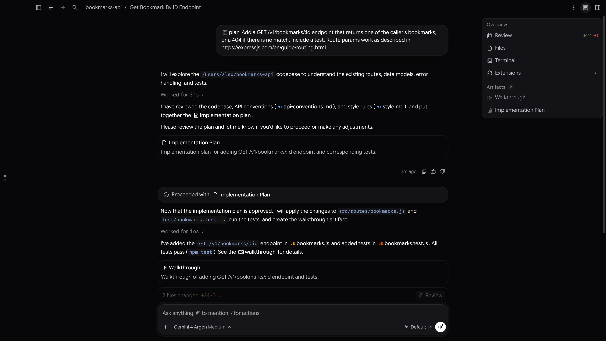
plan (Arriba al centro)
Le pedís al agente lo que necesitás. El agente analiza los archivos de tu carpeta y las reglas de estilo antes de tocar nada.
Implementation Plan (Centro)
El agente te entrega una tarjeta con el plan de implementación y te dice: "Please review the plan and let me know if you'd like to proceed". Cuando lo aprobás, aparece ✓ Proceeded with Implementation Plan.
Walkthrough y Resumen de Cambios (Abajo)
Al terminar, genera un documento Walkthrough explicando todo lo que hizo y muestra 2 files changed +24 -0 con el botón Review.
Overview (Arriba a la derecha)
Se abre con el botón de arriba a la derecha (o Ctrl + Alt + O). Te da acceso en 1 clic a Review, Files, Terminal, Extensions y a todos los Artifacts creados.
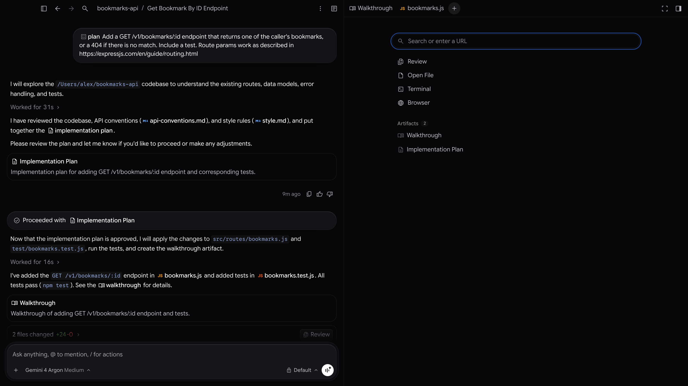
Walkthrough, archivos, +)
Al hacer clic en el botón + del panel derecho, podés abrir en paralelo tus documentos (Open File), la revisión de cambios (Review), el navegador integrado (Browser) o los Artifacts.
Cómo Usar la Barra de Mensajes: Menciones (@), Acciones (/) y Permisos
En la parte inferior de Antigravity siempre vas a ver la caja que dice Ask anything, @ to mention, / for actions. Estas dos capturas reales muestran todo lo que podés controlar desde ahí:
@ para mencionar archivos y reglas
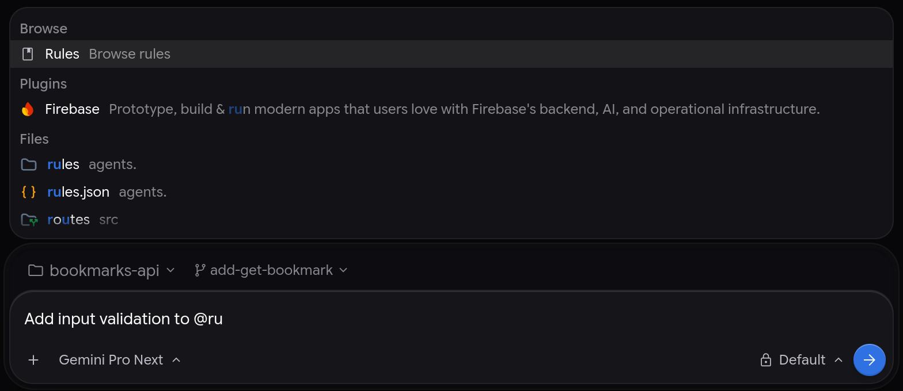
@?
En lugar de copiar y pegar el texto de un documento, escribís @ seguido de parte del nombre (por ejemplo, @glosario o @prd). Antigravity te muestra tus Archivos (Files), Reglas (Rules) y Plugins para que el agente lea el archivo exacto. También ves arriba el selector de carpeta (📁) y abajo a la izquierda el selector de modelo (Gemini Pro, Claude, etc.).
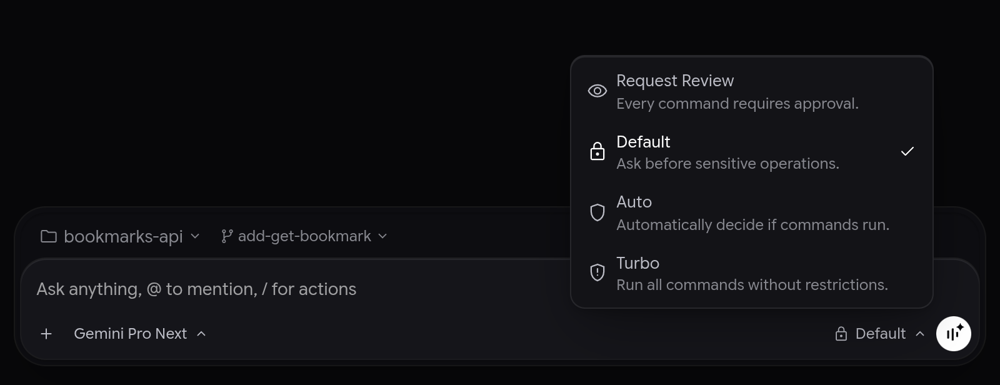
Default)?
- 👁️
Request Review: Te pide permiso antes de ejecutar cualquier comando. - 🔒
Default(Recomendado): Trabaja fluido con tus documentos pero te pide confirmación antes de cualquier operación sensible o herramienta externa (como MCP). - 🛡️
Auto/Turbo: Ejecuta comandos automáticamente sin pausar.
Atajo con Barra (/) |
Cuándo escribirlo en la caja de mensaje | Ejemplo real para tu trabajo de PM o tu curso de AWS |
|---|---|---|
/plan |
Cuando querés que arme primero un plan paso a paso antes de modificar nada. | /plan Armame la estructura del PRD para el Bot de Glosarios usando arquitectura RAG en AWS Bedrock. |
/grill-me |
Cuando tenés una idea a medias y querés que Antigravity te haga preguntas clave de Producto para cerrar huecos. | /grill-me Quiero presentar este proyecto en mi trabajo pero no sé qué preguntas técnicas me van a hacer los ingenieros. |
/browser |
Cuando querés que abra el navegador integrado para probar una pantalla web o buscar documentación. | /browser Abrí el simulador de RAG y verificá cómo queda la pantalla. |
/plugin o /mcp |
En la versión de terminal (CLI) abre el administrador interactivo de Plugins y servidores MCP. | /mcp para ver qué servidores están activos o recargarlos. |
Cómo Revisar lo que Hace el Agente: Panel Review, Lector PDF y Navegador Integrado
Como Product Manager, no necesitás usar herramientas de programadores para ver qué modificó el agente, leer un PDF de tu curso de AWS o probar un prototipo visual. Todo se abre en pestañas dentro del mismo Antigravity:
Review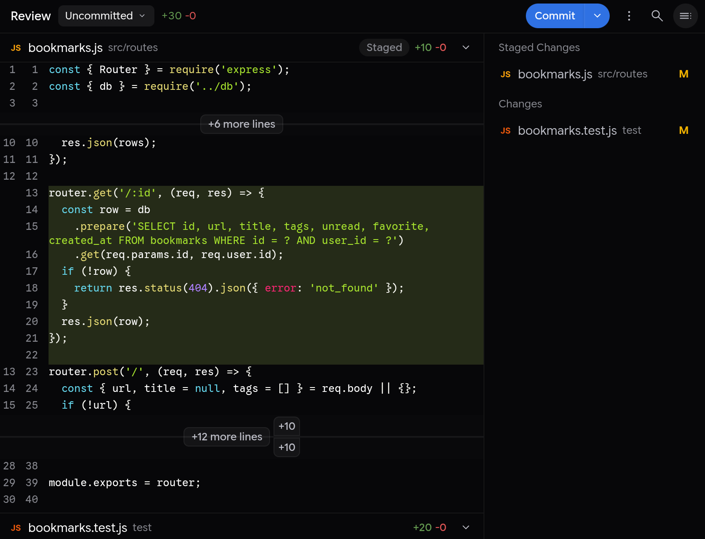
Review, ves resaltado en verde todo lo que el agente agregó en tus archivos y podés guardarlo con el botón azul Commit.
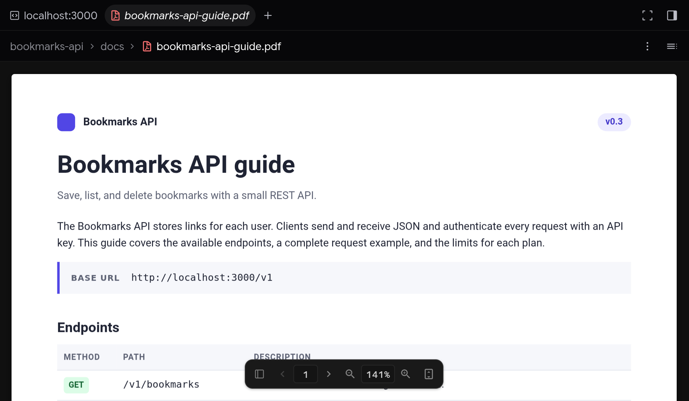
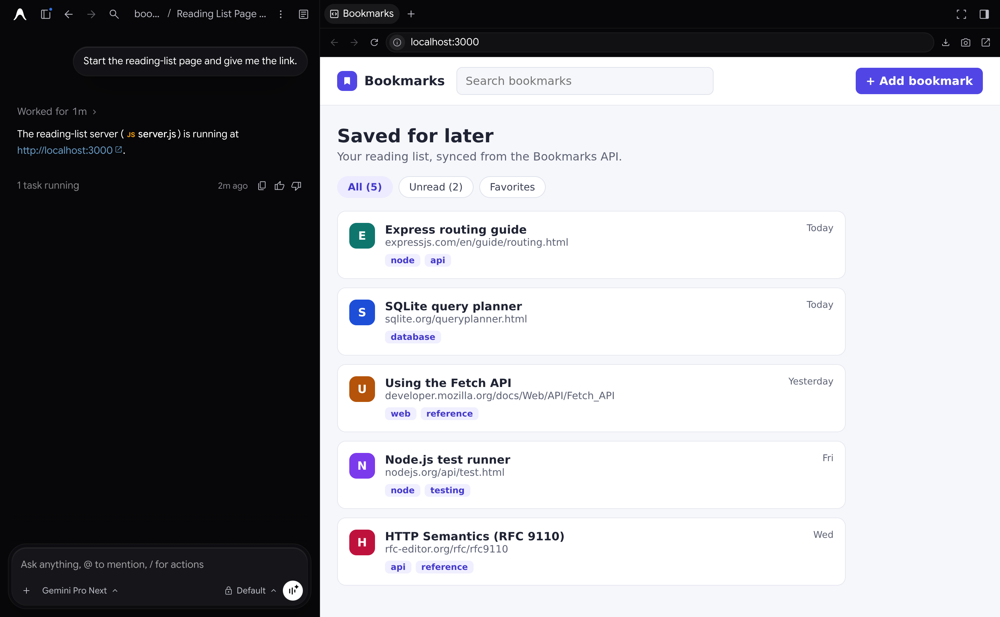
¿Qué es MCP y Cómo Conectar Antigravity con AWS Paso a Paso?
Dónde están los Plugins y Servidores MCP en la App Real de Antigravity
Mirá estas capturas reales del menú Customizations de Google Antigravity App y del panel lateral de Antigravity IDE:
Customizations y Marketplace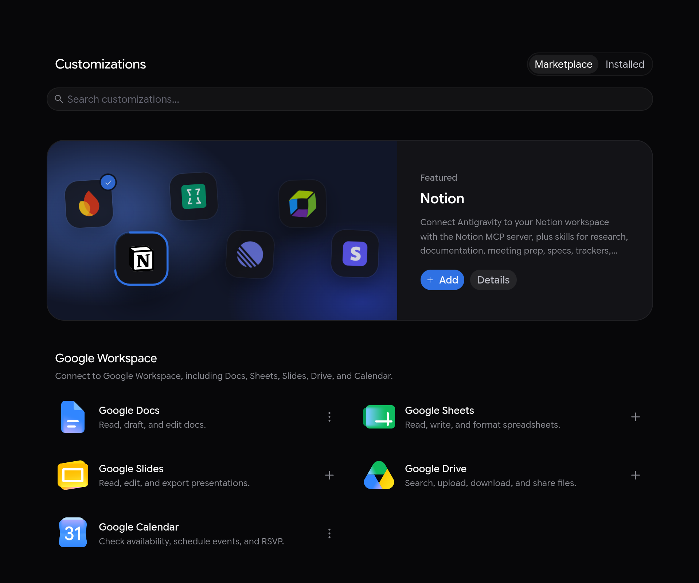
Customizations
En la pestaña Marketplace podés instalar con un clic (botón + Add) integraciones listas para usar como Google Docs, Google Sheets, Google Drive, Notion, Canva o Firebase.
Installed y Sección MCP Servers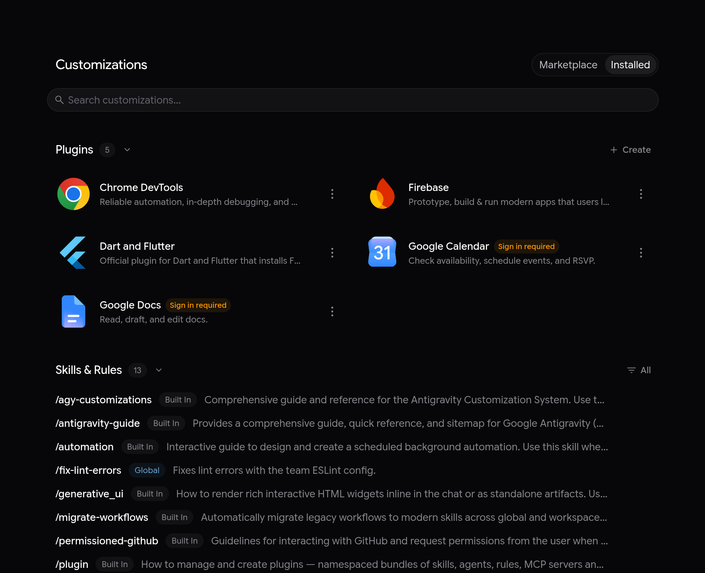
Installed (Arriba a la derecha de Customizations)
Aquí ves tus Plugins instalados, tus Skills & Rules y, al bajar por la página, la sección MCP Servers donde agregás o configurás tus servidores de AWS.
MCP Servers en Antigravity App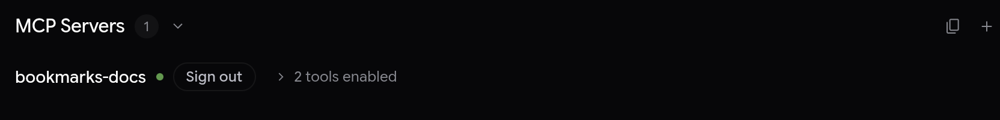
MCP Servers:
- Ícono de Copiar (al lado del
+): EsCopy Config File Path(copia la ruta exacta de tu archivomcp_config.jsonpara que pegues los servidores de AWS). - Botón
+(Add MCP Server): Abre el buscador de servidores MCP integrados. - Punto Verde (
●): Indica que el servidor MCP ya está conectado y con sus herramientas habilitadas (tools enabled).
⋮)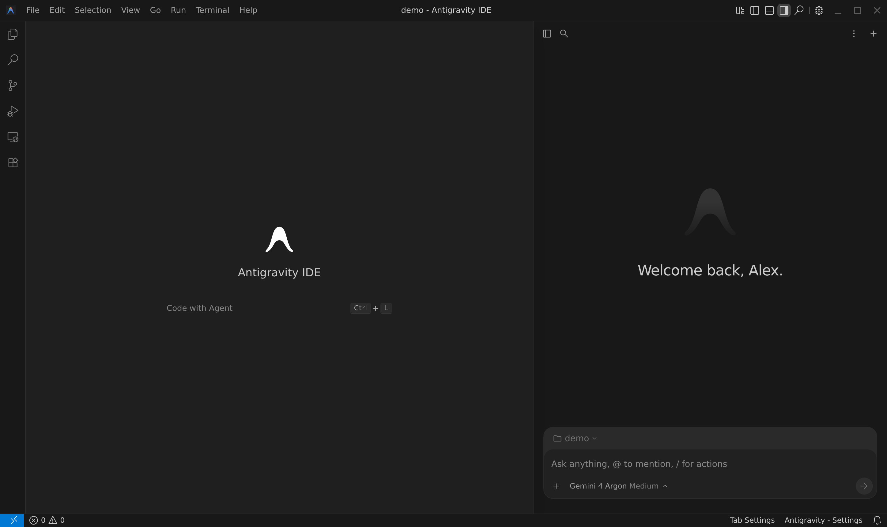
+), hacés clic en los tres puntitos ⋮ (More actions) → elegís MCP Servers → Manage MCP Servers → View raw config. Eso te abre el archivo mcp_config.json directamente en el editor.
Tutorial Paso a Paso: Cómo Conectar los Servidores Oficiales de AWS (awslabs)
Instalar uv (El lanzador oficial que usa AWS para sus servidores MCP)
Los servidores MCP oficiales creados por Amazon (awslabs) se descargan y ejecutan automáticamente mediante una herramienta liviana llamada uv. Solo tenés que instalarla una única vez abriendo la Terminal de Antigravity (o PowerShell en Windows) y pegando este comando:
winget install --id=astral-sh.uv -e
(Opcional) Conectar tu cuenta de estudio de AWS en modo 100% Lectura Segura
Si solo querés usar el MCP de Documentación Oficial de AWS para estudiar para tu curso, ni siquiera necesitás conectar tu cuenta de AWS (podés saltar directo al Paso 3).
Si además querés que Antigravity audite tu cuenta de práctica (para revisar tus buckets S3 o vigilar que tu gasto siga en $0.00 dentro del Free Tier), creá en la consola de AWS un usuario IAM con el permiso ReadOnlyAccess (así es imposible crear recursos pagos o borrar algo por error) y cargalo en tu terminal con:
aws configure # AWS Access Key ID: [Pegás tu Access Key de lectura] # AWS Secret Access Key: [Pegás tu Secret Key] # Default region name: us-east-1 # Default output format: json
Abrir tu archivo mcp_config.json en Antigravity y pegar el bloque de AWS
Dependiendo de qué pantalla de Antigravity estés usando:
- En Antigravity App: Ir a
Customizations(barra izquierda) → pestañaInstalled→ secciónMCP Servers→ clic enCopy Config File Path(el archivo está en~/.gemini/config/mcp_config.jsono en.agents/mcp_config.jsondentro de tu carpeta) y abrirlo en una pestaña. - En Antigravity IDE: En el panel derecho del Agente, clic en
⋮(arriba a la derecha) →MCP Servers→Manage MCP Servers→View raw config.
Pegá esta configuración oficial de AWS y guardá el archivo (Ctrl + S):
{
"mcpServers": {
"aws-documentation": {
"command": "uvx",
"args": ["awslabs.aws-documentation-mcp-server@latest"],
"env": {
"FASTMCP_LOG_LEVEL": "ERROR"
}
},
"aws-cost-explorer": {
"command": "uvx",
"args": ["awslabs.cost-explorer-mcp-server@latest"],
"env": {
"AWS_PROFILE": "default",
"AWS_REGION": "us-east-1",
"FASTMCP_LOG_LEVEL": "ERROR"
}
},
"aws-bedrock-kb": {
"command": "uvx",
"args": ["awslabs.bedrock-kb-retrieval-mcp-server@latest"],
"env": {
"AWS_PROFILE": "default",
"AWS_REGION": "us-east-1",
"FASTMCP_LOG_LEVEL": "ERROR"
}
}
}
}
Verificar el punto verde (●) y empezar a preguntar en español
Al guardar el archivo, volvé a la sección MCP Servers (como vimos en la Captura Real 10) y vas a ver el punto verde ● al lado de aws-documentation, aws-cost-explorer y aws-bedrock-kb. ¡Listo! Ya no tenés que tocar más configuraciones: ahora simplemente le hablás en español en el chat y Antigravity usa las herramientas de AWS cuando las necesita.
Probá Cómo Te Ayuda Antigravity + AWS MCP en tu Curso y en tu Trabajo de PM
Hacé clic en cualquiera de estos 4 escenarios reales para ver exactamente qué le escribirías a Antigravity en español y qué hace el servidor MCP de AWS por detrás:
Mapa de Equivalencias: Lo que Vimos en la Sesión 2 ↔ Servicios de tu Curso de AWS
Esta tabla conecta cada concepto de producto que aprendiste en la Sesión 2 de la Mentoría (RAG, Chunking, Embeddings y Guardrails) con el nombre exacto del servicio en Amazon Web Services (AWS):
| Concepto de la Sesión 2 (Mentoría) | ¿Qué función cumple en palabras simples? | Servicio Equivalente en tu Curso de AWS |
|---|---|---|
| Fuente de Verdad (Ground Truth) | La carpeta donde guardás los PDFs, manuales y glosarios oficiales verificados. | Amazon S3 (Simple Storage Service) — Tus documentos viven en un Bucket S3 privado. |
| Pipeline de Ingestión y Chunking (15% Overlap) | Cortar los PDFs largos en párrafos de ~1.000 caracteres dejando un 15% repetido entre bloques para no cortar frases al medio. | Amazon Bedrock Knowledge Bases — Tiene una opción nativa donde elegís Max tokens per chunk y Overlap percentage (15%) sin programar. |
| Modelo de Embeddings (Coordenadas de significado) | Traducir cada párrafo de texto a una lista de números para buscar por significado (ej. conectar "beneficio" con "obra social"). | Amazon Titan Text Embeddings v2 o Cohere Embed (adentro de Amazon Bedrock). |
| Base de Datos Vectorial + Filtros de Metadatos | Guardar esos vectores con etiquetas (idioma=ES-LATAM, año=2026) para filtrar antes de buscar. |
Amazon OpenSearch Serverless o Amazon Aurora PostgreSQL (pgvector). |
| Freno Anti-Alucinación (Umbral 0.75) + PII Masking | Bloquear respuestas cuando el sistema no está seguro y ocultar datos privados (DNI, sueldos, tarjetas) antes de enviarlos al modelo. | Amazon Bedrock Guardrails — Permite configurar filtros de datos sensibles (PII) y controles de Contextual Grounding. |
| Contrato Enterprise SLA (Zero-Data Retention) | Garantía legal y técnica de que los documentos de tu empresa nunca se usan para entrenar modelos públicos. | AWS Bedrock Data Privacy + AWS IAM — Por contrato en AWS Bedrock, tus datos nunca se usan para entrenar modelos base. |